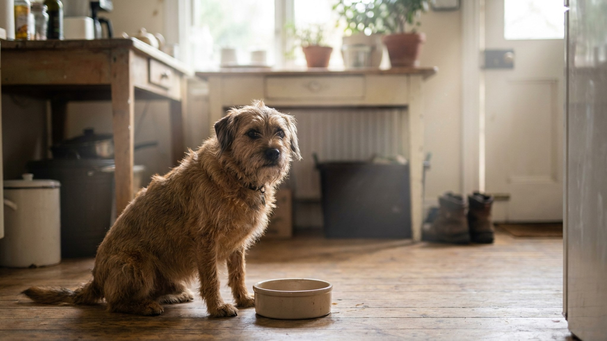

Вы кормите собаку дважды в день — и сосед говорит, что надо три раза. Или наоборот. У каждого своя правда, и обе стороны отчасти правы: оптимальное количество кормлений зависит от возраста, породы и образа жизни собаки. Разберём, как выбрать режим, почему свободный доступ к еде — плохая идея и что важно для крупных пород с глубокой грудью.
🐾 Первая помощь — всегда под рукой
AnimaLife подскажет, что делать в тревожной ситуации с питомцем ещё до визита к врачу. Откройте в один тап.
Желудок щенка мал, обмен веществ высокий, рост идёт быстро. Одно или два кормления не дадут достаточного количества энергии и питательных веществ за раз — желудок просто не вместит нужный объём.
Переходить на меньшее количество кормлений нужно постепенно, не резко. Резкое сокращение — стресс для пищеварения и поведения.
Два кормления в день — утром и вечером — стандарт для большинства взрослых здоровых собак. Почему именно два:
Три кормления оправданы для взрослых собак при определённых обстоятельствах: высокая физическая нагрузка (рабочие собаки, аджилити, длинные прогулки от 3 часов в день), склонность к набору веса при двух кормлениях, рекомендация ветеринара по состоянию здоровья.
Немецкие доги, ротвейлеры, доберманы, ирландские сеттеры, сенбернары и другие крупные породы с глубокой и узкой грудной клеткой требуют особого внимания к режиму кормления.
У таких собак желудок при определённых условиях может смещаться — это острое состояние, требующее срочной ветеринарной помощи. Основные факторы риска включают кормление непосредственно перед или после интенсивной нагрузки, большой объём пищи за раз и питьё большого количества воды сразу после еды.
Как снизить риски через режим питания:
Если у вас крупная порода с глубокой грудью — уточните у своего ветеринара конкретные рекомендации, учитывающие особенности вашей собаки.
Миска, из которой собака ест «когда хочет», — удобно для хозяина, но создаёт несколько проблем:
Единого правила нет. Большинство владельцев и ветеринаров рекомендуют делить суточную норму примерно поровну. Если у собаки активное утро (длинная прогулка, тренировка) — чуть больше утром. Если вечером — чуть больше вечером.
Важнее стабильность времени, чем точный объём. Собаки — животные с выраженными суточными ритмами. Кормление в одно и то же время снижает тревожность, улучшает работу пищеварения и делает поведение более предсказуемым.
🐾 Экономьте на лишних визитах к врачу
Сначала спросите AI-ветеринара в AnimaLife — часто этого достаточно, чтобы понять, нужен ли визит к врачу.
🐾 Понравился разбор?
Подпишитесь на канал — каждый день разбираем по одному тревожному симптому у кошек и собак: что в пределах нормы, а когда пора к врачу. Подпишитесь, чтобы не пропустить разбор, который может спасти здоровье вашего питомца.
Собаки старше 7–8 лет (у мелких пород — позже, у крупных — раньше) часто выигрывают от возврата к трём кормлениям. Причины: снижение обмена веществ, уменьшение разового аппетита, чувствительность пищеварения. Три небольших порции переносятся лучше двух больших.
Если пожилая собака начала оставлять еду в миске — это сигнал пересмотреть объём или частоту, и повод поговорить с ветеринаром.
Правильный режим кормления — это не сложно. Два раза в день для здоровой взрослой собаки, три раза для щенков и пожилых, стабильное время, контроль объёма. Этого достаточно для большинства собак.
Материал носит информационный характер и не заменяет очную консультацию ветеринара.